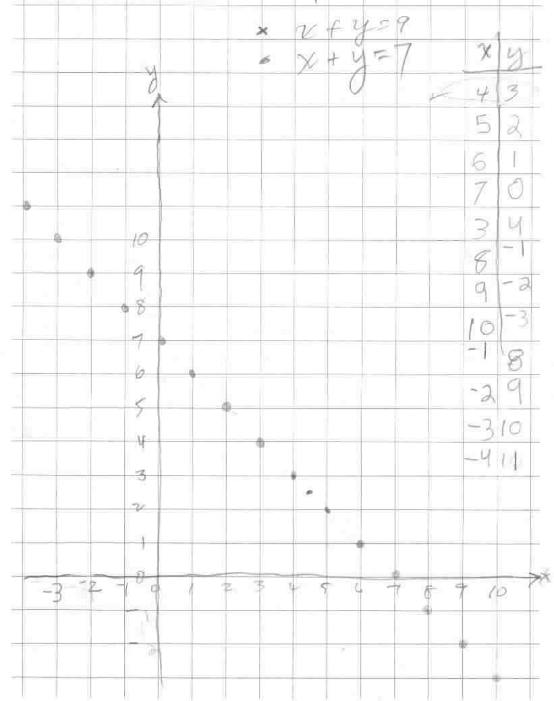

Ashley, age 7, works with Don
Ashley is from MO, and is Darryl's niece (he's Don's computer genius friend). She came for about 2 hours Tues. August 14, 2001 when she worked on the following:
Don started off with 2x3 she knew 6, then when Don wrote 2x30 and read it as 2x3tens = she said she'd never done that. A little mumbling from Don and she said 60. Then she had no problem from there on. Don read each problem as he wrote it, because it is important for her to hear the 3 hundred, the 3 million, .. so she knows the answer is 6 hundred or 6 million, and this just carries along to make the other problems just as easy.When asked to make up a problem she wrote 2x43= and shoved her book to Don for him to do!
Don then got out the "cookies"-the 3x5" cards and asked Ashley to share 5 cookies between 2 people. She gave herself 1 and Don 1 cookie. The she cut the remaining cookie into 2 pieces, which she said was 1/2. Then they each person had 2 1/2 cookies.
Then they did the graph of the equation x + y = 7. She knew about negative numbers and continued the numbers on the x-number line to the left and continued the numbers on the y-number line down, with negatives. Following "the yellow brick road" - the pattern, she was able to predict points and then check to see if this point made the sentence true. Ashley knew 8 + -1 = 7.

Don asked her what the graph of x + y = 9 would look like and how it would be different from the one they had done. Don decided to leave that question for next time. When she about to leave, Don asked Ashley to find the 2 numbers for the point which is between 4 and 5 on the x-axis and between 2 and 3 on the y-axis above.
At various points in their discussion, Ashley would ask something like "is it 7?" And Don would ask her "Are you asking me or telling me it's 7?" She knew it was 7, so Don told her to say it like you mean it, without the question. Don said it like he wanted her to say it, by lowering the pitch instead of raising it when one asks a question. Don thinks this is a matter of her lack of self confidence, sometimes fear of saying the "wrong answer". Ashley is not alone in this at all. Many youngsters are afraid of making mistakes or and lack confidence in what they are doing, especially in math. That's one way he deals with this. Then at one point she said she was stupid, and Don told her she is very smart and don't even think that! Don thinks raising their self-confidence is as important as them learning the mathematics! Once they realize they can do it, there is no stopping them from learning anything!
Ashley worked on the Shuttle Puzzle, which was difficult for her. Don suggested she start with one pair of pegs, then work up. He saw that at 3 pairs of pegs she was getting frustrated. So he brought out the geoboard. He also gave her some spotty paper for her to draw the shapes she made on the geoboard and find the area within them. (see some student work with the geoboard)
Ashley accepted that 1 can of paint would cover the square above left (has an area of 1). She was very good at drawing the shapes. The shape above right, she said would have an area of 2. Don made a rectangle around the triangle and she agreed that the triangle would have an area of 1 (1/2 the 2), plus 1 for the square = 2.
Ashley made other shapes which she was able to find the area (one was 6 1/2 units). Then he thought she needed to do a harder one; he made the triangle above. She guessed 2 1/2 for its area. She had trouble drawing the shape so Don put the spotty paper over the geoboard and pushed the paper down over the nails. Then she could feel the rubber band and draw the triangle. Then Don put a red rubber band around the triangle to form a square. Ashley knew its area was 4. He said " if we can find the area of the 3 pieces outside the triangle, inside the square, we could subtract those from 4 and get the area of the triangle. She knew the little triangle area was 1/2, the other 2 triangles were each 1 (from the other problem above). So 1 + 1 + 1/2 = 2 1/2 . So 4 - 2 1/2 = ? or what added to 2 1/2 would make 4? She figured that to be 1 1/2, which was the area of the triangle she was looking for! Fine job Ashley!
Don got out the Tower Puzzle for her to try. She worked on this for about a half hour. Don asked Ashley if she wanted to borrow the Tower Puzzle and bring it back on Thursday, when she agreed to return. She signed it out on Don's sign-out list (and Darryl signed out the book "Who Moved My Cheese?" by Spencer Johnson, M.D., published by G. P. Putnam's Sons, NY). Don keeps 2 copies of this book for his students and/or parents to read.
Darryl relayed to Don the next morning, that after she left Don's house, Ashley figured out the Tower Puzzle and was able to show someone else how it works that night. She also told Darryl she was anxious to return on Thursday.
Thursday: [Upon arriving for her session with Don, Ashley yawned a lot, as if she was tired. But she stayed for about 2 hours!]Tuesday's problem was to share 5 cookies between 2 people, and each person got 2 1/2 cookies. Ashley hadn't written this answer, so Don asked Ashley to just write the 2 1/2 in her notebook, and she did.
Don had Ashley find the 2 numbers for the point which is between 4 and 5 on the x-axis and between 2 and 3 on the y-axis on the graph of x + y = 7. After a couple of incorrect answers she realized it was 4 1/2 on the x-axis. She tried 4, then 3 for the y-number. Whatever she said it had to add with 4 1/2 to get 7. She added 4 1/2 + 4 and got 8 1/2 instead of 7. And 4 1/2 + 3 she realized was 7 1/2, again not 7. Then she went for 2 1/2. 4 1/2 + 2 1/2 = 7 and that worked! So the 2 numbers for that point were (4 1/2, 2 1/2). Then when Don gave her the point up one and left one from this point she got (3 1/2, 3 1/2).
Don had Ashley draw the square numbers on squared paper, going to 52 = 5x5 = 25, and coloring in the L-shaped pieces. He started with the 1 by 1 square, then asked her to do the 2by2 square and write down 22 = 2x2 = 4, the number of squares in the 2 by 2 square. The numbers 1, 4, 9, 16, and 25 are the square numbers and the L-shaped differences 1, 3, 5, 7,... are the odd numbers. See Tara's work on the square numbers.
Ashley tried to make the 3x3x3 cube using the 7 soma pieces. Don asked if she would like to make these pieces and she proceeded to glue the 1 cm cubes together to do that. (See Olivia's work on the Soma cubes). She put her pieces in a bag to dry and took them home.
Ashley started on 1/2 + 1/4 + 1/8 + ... She got as far as shading in 1/2, then half of the half. Don asked her what fraction of the whole cake this was. How many of these pieces make a whole cake. She found 4, so Don explained that if 4 make the whole cake, each piece is 1/4 of the cake. Then she said she was tired of coloring.
Don gave Ashley the equation 2x + 3 = 17, which he read as 2 times some number in the box, plus 3 equals 17. She thought about this for a while and said 14. Don put 14 in the box and said 2x14 + 3 = 17. You don't mean 2x14, you mean 2xthe number, has to equal 14 because 14 + 3 = 17. What times 2, what number added to itself, is 14. She said 7. And 2x7 + 3 = 17 is true, so the answer is 7. Don left her with the equation 2x + 3 = 18 to work on at home.
Ashley then asked about the balance scale with weights. Each weight was 10 grams, rectangular with a hole in it to hang on the scale. The scale had numbered hooks, 10 to 1 on the left side and 1 to 10 on the right side, on which to place the weights. For example she put 2 weights at 5 on the left side and these balanced 1 weight on 10 on the right side. She worked for at least 1/2 hour on problems she made up or Darryl made up, or Don made up. Well done Ashley!
Before she left, Don wrote down some chapters in his worksheet book that she had started and could continue at home, including the graph of x + y = 9, solving the equation 2x + 3 = 18, the square numbers, trying to make the 3x3x3 cm cube, and continuing the 1/2 + 1/4 + ... He also gave her some 3"x5" blank cards for the cookie-sharing and some 1/2" graph paper to use for graphing.